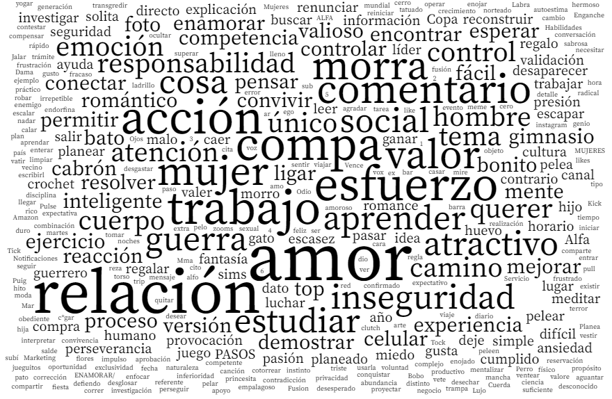
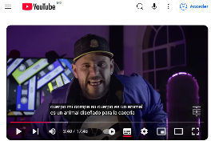
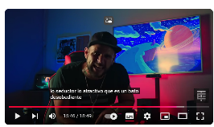
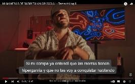
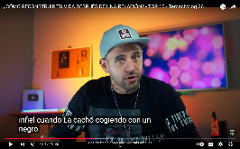

Resumen.
Este artículo de investigación se enfoca en analizar la normalización del machismo a través del contenido generado en YouTube por El Temach entre 2021 y 2024. Por medio del análisis de seis de sus videos más populares, se explora cómo su lenguaje humorístico y sus narrativas contribuyen en la difusión y aceptación de estereotipos de género y actitudes sexistas entre su audiencia, es por ello que se emplea una metodología cualitativa basada en el análisis de discurso, dicho análisis pretende identificar el lenguaje machista por medio del humor sexista que refuerza la desigualdad de género. El Temach utiliza un humor que, aunque aparentemente es inofensivo, difunde actitudes machistas, que podrían ser normalizadas. Este análisis confirma cómo los creadores de contenido de plataformas digitales tienen un gran impacto en la normalización del machismo en la sociedad.
Palabras clave:
Machismo, Normalización, Humor, Influencers, redes sociales
Abstract.
This research article focuses on analyzing the normalization of machismo through the content generated on YouTube by El Temach between 2021 and 2024. Through the analysis of six of his most popular videos, we explore how his humorous language and narratives contribute to the dissemination and acceptance of gender stereotypes and sexist attitudes among his audience, which is why we employ a qualitative methodology based on discourse analysis, such analysis aims to identify macho language through sexist humor that reinforces gender inequality. Temach uses humor that, although apparently harmless, spreads sexist attitudes, which could be normalized. This analysis confirms how content creators of digital platforms have a great impact on the normalization of machismo in society.
Keywords:
Machismo, Normalization, Humor, Influencers, social networks.
La presente investigación tiene como objetivo analizar cómo los contenidos generados por el influencer llamado El Temach en la red social YouTube contribuyen a la normalización del machismo. Es importante reconocer el impacto de los contenidos de redes sociales en las personas ya que la masiva adaptación de plataformas digitales ha transformado por completo la forma en que las personas interactúan, comparte información y consumen contenido. Según Inarejos (2019), desde el año 2013, las plataformas como lo son Facebook, WhatsApp y YouTube ya tenían un alcance muy significativo en la audiencia.
La relevancia de este estudio se encuentra en el hecho de que, aunque el machismo ha crecido a través de los años y se ha esparcido más allá de los ámbitos familiares y del trabajo, donde tradicionalmente se encontraba, su presencia en diversos medios de comunicación, incluyendo televisoras, radiodifusoras, periódicos, tiene una ampliación significativa en el internet, especialmente en las redes sociales. Todas estas plataformas exponen directamente la personalidad de los usuarios, por ende, tienden a descalificar, criticar, chantajear y realizar señalamientos fuertes mayormente contra las mujeres (Inarejos, 2019). Tal y como lo menciona Chirino (2020) quien señala que los medios de comunicación han jugado un papel muy importante en el rápido crecimiento y desarrollo de la violencia de género, presentándola como algo “normal” en lugar de un problema grave para la sociedad, especialmente para las mujeres.
En este sentido, es de suma importancia reconocer el impacto que los influencers tienen en redes sociales, ya que cuentan con un gran alcance y una influencia significativa en la interpretación diaria de su audiencia. Un ejemplo de esto es el influencer Luis Castilleja, mejor conocido como “El Temach”, quien destaca en las plataformas digitales donde su consumo es masivo y en constante cambio. Este tipo de contenido, que en particular utiliza el humor como su lenguaje de entretenimiento, puede contribuir a la normalización de actitudes machistas. Aunque el humor es considerado como un medio de comunicación, también se relaciona con un lado negativo en el que transmite ideas que, al ser repetidas y aceptadas sin ningún tipo de cuestionamiento, refuerzan la violencia de género y contribuyen a la normalización del machismo. Tal y como lo señala Van (1994) en su libro Feminist media studies, quien asegura que los contenidos no solo informan o difunden la información, sino, que también afectan en cómo la sociedad interpreta la realidad a partir de esa información y la normalizan en su vida cotidiana.
Por lo anterior, esta investigación recobra relevancia, porque, aunque existen estudios como el de Calvopiña y Tello (2024), aún no se ha realizado un análisis sobre los contenidos generados por El Temach. Este vacío de investigación hace que sea de suma importancia analizar el contenido de sus videos, dado que su alcance y la interacción masiva y constante que tiene con sus seguidores, lo que convierten a este tipo de contenido en un medio importante para la normalización de conductas que incitan a generar violencia de género.
Esta investigación busca responder a ¿De qué manera el contenido con mayor alcance y reproducciones generado a través del tiempo por el influencer llamado El Temach en la plataforma de YouTube contribuye a la normalización del machismo?, a través de analizar las temáticas, narrativas y representaciones discursivas en los videos con mayor visualización de la plataforma YouTube de El Temach, en los que promueve el machismo, y así reconocer la normalización y promoción de las violencias de género en sus contenidos.
El trabajo se estructura en cinco secciones. En primer lugar, se presenta el estado del arte y antecedentes en los cuales se aborda el cómo el machismo se ha normalizado en los medios de comunicación, especialmente en las redes sociales, donde el fácil acceso de estas plataformas ayudan a la difusión de estas actitudes. Se discute el impacto en las redes sociales, señalando cómo los influencers han contribuido con la normalización de actitudes machistas, Además, se mencionan estudios previos que evidencian este fenómeno.
En segundo lugar, el marco teórico presenta cómo la violencia de género se está manifestando actualmente en las plataformas digitales, con un enfoque principal en la normalización del machismo en YouTube y en el contenido de creadores como El Temach. Se aborda conceptos claves como lo son: el patriarcado, la masculinidad hegemónica, y el machismo, explicando cómo estos términos sostienen la discriminación hacia las mujeres.
En tercer lugar, se utiliza una metodología de análisis de discurso con un enfoque descriptivo, siguiendo con el modelo puesto por Vila (2021). Este análisis de discurso se enfoca en los 6 videos con mayor número de visualizaciones del influencer El Temach. En cuarto lugar, se presentan los resultados los cuales se muestran en tres categorías: Machismo, normalización del machismo y minimización de las mujeres con palabras. Finalmente, las conclusiones presentan los principales hallazgos de la investigación, destacando cómo el contenido de El Temach contribuye a la normalización del machismo, cumpliendo con el objetivo de investigación, pero además se analizan las implicaciones que hay en la sociedad sobre estos discursos, la falta de regulación de la plataforma y las posibles direcciones para futuras investigaciones.
Hoy en día es posible encontrar el machismo reflejado en distintos medios de comunicación, tanto televisivos como periodísticos, y ahora también por medio del internet. Para García (2017), el micro machismo y la misoginia están presentes en la sociedad y el internet solo actúa como un reflejo de ello, no obstante, el hecho de que el machismo migrara a este medio, aun cuando el internet presenta un menor número de mujeres que hombres conectadas, ha contribuido en generar impunidad frente a los agresores digitales, puesto que les permite el anonimato y además de que se escudan en la libertad de expresión, aun cuando los contenidos que se generan trastocan los derechos humanos como la igualdad, el honor y la dignidad de la persona que se vuelve blanco de las reacciones y comentarios de esta índole, lo que se convierte en un problema que va desde la normalización y reforzamiento de estigmas del machismo, hasta un fuerte impacto en la salud mental de los espectadores de ambos sexos (Vegal, 2019), sobre todo considerando que las redes sociales son agentes formadores de la construcción de género que suelen impactar en acciones machistas en las audiencias (Gil et al., 2024).
Esta falta de control convierte a las redes sociales en un escenario idóneo para los creadores de contenido que promueven la violencia de género, mostrándose como un reflejo de la sociedad. Los medios a través de los cuales se difunde este contenido asumen una responsabilidad social mínima hacia los consumidores, lo que otorga a los creadores la libertad de replicar una cultura sexista y machista (Bolaños, 2019). Tal es el caso de YouTube, que de acuerdo con Vila (2021), desde los inicios de esta plataforma se encuentra presente el machismo, la misoginia y el sexismo como un género humorístico a la hora de hacer público un video a través de la misma. Algunos de los ejemplos mencionados por la autora, son los YouTubers German Garmendia, Rubius y Wismichu, que fomentan tratos hacia las mujeres altamente estereotipados en cuestiones de género. Sin embargo, estos generadores de contenido no son los únicos que promueven contenidos machistas; otro de los personajes considerados como Influencer que, desde sus inicios, ha generado videos controversiales, por promover conductas diferenciadas por género, en los que además de promover los estereotipos y el machismo, es Luis Castilleja, mejor conocido como “El Temach”, quien de acuerdo con Calvopiña y Tello (2024), ha logrado influir e implementar comportamientos mediante su narrativa, guiando a su audiencia a un nivel más personal, por lo que sus contenidos son trasladados a la vida real de los seguidores, incitando así a la generación de violencia de género y a la normalización del machismo entre sus seguidores.
Esto se agrava considerando lo señalado por Hens (2019) quien dice que los youtubers, al igual que el resto de personas que tienen alcance a través de las redes sociales puede afectar lo que las personas piensan, por lo que los comentarios machistas tienen el riesgo de esparcirse mientras que ésta posibilidad también se abre para quienes tienen mensaje a favor de la igualdad, sin embargo, al abrirse esta puerta, los comentarios pueden darse en un sentido o en otro, sin embargo, el riesgo negativo es mayor, ya que como Light (2013) resalta los hombres buscan construir y reafirmar sus actitudes masculinas por medio de redes sociales, donde encuentran mensajes machistas y que incitan a la violencia, generados mayormente por personas en el anonimato.
Para Tortajada y Vera (2021), el utilizar el internet para expresar la desigualdad y ofender a las mujeres de forma anónima, es una respuesta de odio hacia el avance que ha tenido el feminismo en los últimos tiempos, subraya que, aunque se tengan progresos legales para detener estos ataques, falta investigar más sobre el tema para tener una propuesta de solución efectiva, a lo que Baños (2019) agrega que, para tener un ámbito digital con mayor respeto para ambos sexos, se necesita generar confianza en el género femenino, haciéndolo sentir representado de una manera justa por los usuarios de redes, impulsando de una mejor manera las perspectivas de género, además señala que, por el momento se encuentra un debate sobre si se deberían utilizar medidas legales en este medio ya que podrían afectar otros derechos como la libertad de expresión.
Por su parte, Lopes (2023) llega a la conclusión de que para erradicar los comentarios ofensivos hacia las mujeres en las redes sociales en necesario ejecutar normas y principios que guíen el comportamiento de las personas, sistematizar respuestas contra comentarios ofensivos y sugiere una acción conjunta cuando se observe algún comportamiento de esta índole. También sugiere que la libertad de expresión debe de ser analizada con mayor profundidad para evitar un comportamiento abusivo y ofensivo hacia las mujeres en las redes sociales.
Sin embargo, tal y como lo destaca el Observatorio Nacional de Tecnología y Sociedad (ONTSI) (2022), el problema radica en que los comentarios ofensivos generados por medio de redes sociales hacia las mujeres, los cuales se consideran una violencia invisible a pesar de encontrar claros insultos, amenazas, y hostigamientos; de ahí que se sugiere visibilizar el problema haciendo un estudio detallado de casos para identificar las diferentes formas de agresión online contra las mujeres; Pedroza (2019), agrega que las violencias de género en las diversas plataformas generan que las mujeres se excluyan de realizar comentarios o publicaciones en las mismas, lo que puede deberse a que las mujeres no suelen saber cómo defenderse de algún agresor en redes sociales, por lo que es necesario regular las normas de comportamiento y volver los mecanismos de denuncia más accesibles, ya que el odio organizado se hace presente por un grupo de personas o marcas que agreden a un grupo de individuos específico que cuentan con una característica en común, pero que consideran inferiores (Gil et al., 2022).
Ciertamente, en los últimos tiempos ha habido un creciente interés por estudiar el contenido generado por los Youtubers, entre el que destaca el análisis de las diferencias entre los imaginarios de hombres y mujeres que se presentan en los videos, donde se vuelve evidente que el humor sexista es una herramienta que les permite volverse virales en la plataforma YouTube, demostrando también cómo influye en los adolescentes hoy en día (Vila, 2021,).
Para Vila (2021), el éxito del contenido de ciertos Youtubers se basa en tratar temas ligeros, pero con un humor ofensivo, sexista y hasta misógino, estos suelen enfocarse o dirigirse principalmente al género femenino, sin embargo, pese a las críticas hacia este tipo de contenido, la popularidad de estas figuras va en aumento, pues son admirados por su audiencia, quienes en su mayoría se trata de adolescentes y jóvenes, lo que se puede convertir en un riesgo, ya que los Youtubers manejan un lenguaje que conecta principalmente con la generación millennials y éste, se basa en violencia, incluso, se detectan cambios de tonos de voz cuando utilizan este lenguaje, principalmente para captar la atención del público, y generar una vinculación (Rego y Romero, 2016).
Ante este escenario, los contenidos generados por los influencers representan un riesgo en la normalización del machismo y por ende en incitar a la violencia de género, sobre todo considerando que los seguidores se sienten identificados con el contenido que generan, e incluso lo perciben como amigos, lo que les genera un vínculo que contribuye al crecimiento del alcance de sus redes sociales, como es el caso de El Temach (Calvopiña y Tello, 2024), por lo que este youtuber forma parte del objeto de estudio de esta investigación.
La investigación se centra en la violencia de género que se manifiesta a través de plataformas digitales, enfocados principalmente en la normalización del machismo en Youtube, específicamente a través del contenido de creadores como El Temach. En este sentido, se considera necesario conceptualizar el patriarcado como un sistema en donde las desigualdades entre hombres y mujeres respaldan una conducta de discriminación, en la que el poder se ha asociado históricamente con la figura masculina (Pérez, 2022). Dentro del patriarcado, la masculinidad hegemónica es la forma dominante de género que refuerza el sistema ya que su práctica mantiene la dominación masculina hacia las mujeres (Taylor et al., 2013), por lo tanto, el machismo se trata de una expresión cultural de la masculinidad hegemónica ya que promueve y justifica la superioridad de los hombres hacia las mujeres resaltando características masculinas como la agresividad, la independencia y el dominio mientras que se imponen conceptos femeninos como la debilidad, dependencia y sumisión (Moral y Ramos, 2016).
En este sentido, el fenómeno de la normalización del machismo se refiere a que las personas están tan acostumbradas a este tipo de comportamientos que dejan de percibir estas acciones violentas y las aceptan como características del entorno en el que están (Martínez, et al., 2024). Así, estas actitudes son vistas como “normales” o socialmente aceptadas, lo que facilita su creación a través de contenidos en redes sociales difundiendo de manera masiva y constante.
A su vez, según Olivera y Rojas (2022) el machismo se manifiesta de manera simbólica, ya que muchas veces no es fácilmente perceptible, suele disfrazarse bajo la apariencia de protección y se normaliza a través de valores que, con el tiempo se convierten en normas socialmente aceptadas por las personas.
Con respecto a la plataforma YouTube, Martínez, et al. (2022) señalan cómo los Youtubers siendo productores de contenido audiovisual manejan un formato donde enseñan a su audiencia joven a separarse de diferentes grupos sociales, partiendo del humor y con palabras diferenciadoras como nosotros y ellos, refiriéndose a minorías como suelen ser las mujeres, por lo cual convoca a una responsabilidad social por parte de los creadores de contenido y empujar a los jóvenes a interactuar con este contenido de manera más consciente, ofreciéndoles talleres que los capaciten.
Por otro lado, la aceptación por parte de la plataforma de YouTube en la difusión de la violencia de género se refiere a cómo esta plataforma, a través de su dinámica de interacción, puede amplificar y perpetuar actitudes y comportamientos violentos hacia las mujeres (Crosas, 2016). A pesar de que las plataformas digitales, en este caso YouTube, ofrece un espacio para expresarse libremente, también se ha convertido en un entorno donde la violencia de género se manifiesta de diferentes maneras y constantemente, afectando el bienestar de las mujeres y contribuyendo a la normalización de estas actitudes y comportamientos.
Para esta investigación, los conceptos abordados anteriormente como lo es el machismo y la normalización del machismo por medio de la plataforma de YouTube, se aplicarán mediante un análisis de discurso en las publicaciones de videos de El Temach en YouTube. Así, el machismo será observado a través de los discursos, actitudes y elementos simbólicos, como lo son las temáticas, y los elementos visuales que representan esas actitudes como “aceptables” o “normales” en el público de estas plataformas, resaltando cómo el contenido contribuye a la normalización del machismo.
Esta investigación se enfocará en analizar el contenido de los seis videos más virales publicados en la plataforma de YouTube del influencer “El Temach” entre los años 2021 y 2024, los cuales se seleccionaron debido a que cuentan con un rango de visualización que varía entre los 400,000 y 2.1 millones, lo cual los posiciona en los videos más vistos en su canal a comparación de otros. Los videos seleccionados son: “10 errores que comete un bato cuando le gusta a una morra”, “10 maneras de enamorar/ enclochar a una morra”, “Los primeros 10 pasos del Alfa”, “10 pasos pa´subir su valor social”, “¿Cómo reconstruir tu vida después de una relación?” y “10 cosas que las mujeres dicen que quieren, pero les c*ga”. Se examina en ese periodo ya que El Temach ganó popularidad rápidamente entre esos años y sus videos empezaron a viralizarse, atrayendo a una audiencia fuera de su comunidad habitual. Se escogen estos videos debido a su alta tasa de reproducción y al contenido que abordan, ya que se centran en temas repetitivos sobre relaciones interpersonales, masculinidad y visiones distorsionadas sobre las mujeres, a través de estos videos se pretende cómo los discursos y representaciones de ambos géneros se mezclan con el humor y la normalización de conductas machistas.
Para poder lograr el objetivo de esta investigación, se aplicará un método de análisis del discurso con un nivel y aplicación descriptiva que permita analizar todos los elementos, discursivos y narrativos presentes en los videos con mayor visualización. Tal y como lo realiza Vila (2021) en su investigación: Misoginia youtuber; conseguir audiencia con humor sexista, donde menciona que, es necesario analizar cómo el humor machista y la normalización de estereotipos de género forma parte importante en la atracción de un público nuevo. El análisis será llevado a cabo a través de una matriz de categorías previamente definidas que incluirá elementos como apodos, burlas, comentarios sexistas y muestras de superioridad ante el género femenino.
El alcance de esta investigación es básico ya que su propósito principal es resolver un problema a través de la búsqueda y obtención de datos. Como medios utilizados para su obtención se utiliza el documental, esto debido a que se analiza el contenido existente sobre El Temach en YouTube para estudiar las temáticas y narrativas que están presentes en sus videos más vistos que apoyan la normalización del machismo, y de este modo obtener la información.
El método de recolección de datos estará centrado en una tabla de frecuencia, en donde se mostrará la cantidad de veces que se presentan las categorías en los videos, también se acompañará esta tabla con representaciones visuales de capturas de pantallas de fragmentos de los videos donde se presentan patrones que contribuyen a la normalización del machismo, como el lenguaje utilizado dentro del video (los apodos, las burlas que realiza consciente o inconscientemente, el humor, entre otros), las temáticas centrales y cómo están expresadas.
Adicionalmente a esto, se utiliza Wordcloud en línea como herramienta visual para realizar una nube de palabras para visualizar de forma clara y concisa los términos, frases y conceptos más usados en los videos más populares de El Temach. El propósito del uso de esta herramienta es destacar los patrones de lenguaje y los discursos de género más frecuentes, para facilitar la observación de la normalización de algunos estereotipos machistas y actitudes presentes en sus textos.
Es importante señalar que, aunque el análisis se centrará en un número limitado de videos, el alto número de visualizaciones y la constante interacción que estos obtienen, sólo proporcionan una muestra representativa del contenido más influyente de El Temach. La nube de palabras complementará el análisis del discurso, pues proporcionará una representación visual del vocabulario más utilizado, esta técnica permitirá identificar de manera gráfica los términos y frases más recurrentes en los videos seleccionados.
Para la implementación de la nube de palabras, se extrajeron las transcripciones de los videos seleccionados, después se realizó una reducción de palabras innecesarias, conectores, preposiciones y artículos que no aportan valor al análisis, esto permitió resaltar aquellos términos clave y conceptos que están directamente relacionados con los conceptos del machismo, denigración del género femenino, entre otras expresiones vinculadas al contenido de sus videos, dicho texto se introdujo en Wordcloud para generar la nube de palabras, donde las palabras más grandes indican las más recurrentes, una vez creada la nube de palabras, se realiza un análisis cualitativo de las palabras más destacadas, para buscar los patrones relacionados con la normalización de comportamientos machistas y cómo estos son adoptados y puestos en práctica por su audiencia.
Como primera parte de los resultados, se presenta la nube de palabras generada a partir de las transcripciones de los seis vídeos previamente mencionados. Esta herramienta visual permite identificar de manera más clara la frecuencia en la que aparecen ciertos términos en los videos. La nube de palabras se presenta como punto inicial muy importante que facilita la interpretación y da sentido a los resultados.
Imagen 1. Título: Nube de palabras.

Los términos más frecuentes que se presentan en la nube de palabras reflejan diferentes aspectos de la narrativa principal que cuenta El Temach en sus videos. Términos como: relación, amor, trabajo, compa y morra, permite reconocer que las temáticas principales de los videos están relacionadas con las interacciones sociales y afectivas. Por otro lado, las palabras como guerra, inseguridad, y acción, apuntan a cuestiones que suelen estar más vinculadas a contextos de conflictos o de poder donde generalmente se asocia a la representación masculina. Así mismo, el uso repetitivo de la palabra mujer indica que en los videos, el género femenino es base importante por la frecuencia con la que se habla, la cual puede estar relacionada con la representación y los estereotipos de género, en el que además, los términos como morra y alfa, no solo representan la ideología presente en los videos, sino que también resaltan cómo El Temach usa un lenguaje que, a pesar de que puede parecer ofensivo o divertido, en realidad mantiene el machismo y la desigualdad de género.
Siguiendo con los resultados, se presenta una tabla de frecuencia que agrupa los datos de los 6 videos analizados. Esta tabla muestra la repetición de términos clave dentro de las categorías previamente definidas: machismo, normalización del machismo y minimización de las mujeres con palabras. Esta tabla se basa en la identificación de la recurrencia en las que aparecen estas categorías en todos los videos.
La tabla está acompañada de evidencias visuales importantes que consisten en capturas de pantalla a reforzar las categorías de análisis establecido, extraídas de los mismos videos. Estas evidencias ilustran de manera más detallada los fragmentos específicos en los que se menciona o se expresa con frases, o elementos visuales que contribuyen.
Tabla 1. Presencia de las categorías de análisis en los contenidos de El Temach.
| Título del vídeo | 1-Machismo | 2- Normalización del machismo | 3- Minimización de las mujeres con palabras | Representaciones visuales | ||||
|---|---|---|---|---|---|---|---|---|
1.1 Describe a los hombres como "el sexo fuerte" |
1.2 Se burla de roles no tradicionales de los hombres, como llorar o mostrar sus sentimientos |
1.3 Describe al hombre como autosuficiente |
2.1 Refuerza los roles de género asignados por la sociedad |
2.2 Promueve la superioridad del hombre frente a la mujer |
3.1 Utiliza términos denigrantes hacia el género femenino |
3.2 Cosifica a la mujer como un objeto de placer para el hombre |
||
“10 maneras de enamorar/ enclochar a una morra” 13 de diciembre de 2021. |
9 | 4 | 6 | 7 | 10 | 5 | 1 | |
“Los primeros 10 pasos del Alfa” 2 de diciembre de 2023. |
3 | 2 | 4 | 7 | 2 | 5 | 5 |  |
“10 cosas que las morras dicen que quieren, pero les c*ga” 10 de septiembre de 2021 |
6 | 15 | 10 | 5 | 7 | 2 | 2 |  |
“10 pasos pa´subir su valor social” 17 de noviembre de 2021 |
10 | 2 | 13 | 5 | 4 | 3 | 5 |  |
¿Cómo reconstruir tu vida después de una relación? 29 de octubre de 2022 |
4 | 6 | 11 | 9 | 5 | 5 | 3 |  |
| Total | 39 | 37 | 55 | 42 | 36 | 25 | 22 | |
Fuente: Elaborado a partir de datos de El Temach, (2021), El Temach, (2021), El Temach, (2022), El Temach, (2022), El Temach, (2022), El Temach, (2023).
A partir del análisis de los videos publicados en el canal del youtuber El Temach y en función de la tabla como parte del instrumento diseñado para determinar la frecuencia del machismo en sus videos, reconocer la normalización y promoción de violencias contra el género femenino por medio del contenido en su plataforma, se presentan los resultados de cada una de las categorías con las que se trabajó.
Como número 1 se encuentra el machismo y, cómo se presentan en los videos analizados, se puede observar como el youtuber refuerza constantemente la idea de que la masculinidad se construye a través del control sobre las mujeres. Este tipo de narrativas no solo normaliza comportamientos machistas, sino que también presenta esos comportamientos como normas aceptables, o incluso admirables para recrear.
1.1 Describe a los hombres como "el sexo fuerte"
Uno de los ejemplos más claros de cómo El Temach refuerza el machismo es la constante descripción de los hombres como “el sexo fuerte”. Esto se refleja en la tabla de frecuencia, donde se muestra la cantidad de veces que en los videos se menciona o se representa a los hombres como el sexo fuerte. En este caso, el total es de 39 menciones a lo largo de los seis videos (véase en la Tabla 1).
Con respecto a la descripción del sexo fuerte, el Youtuber suele utilizar constantemente frases y palabras durante la grabación de sus videos que hacen alusión a este sentido de poder, como es el caso del video titulado “10 pasos pa´ subir su valor social”, en el que durante gran parte del video, describe cómo subir el valor social de un hombre para gustarle a una mujer, exponiendo específicamente en el punto 9 que el hacer ejercicio con disciplina es clave, pero deja de lado el entrenamiento sano, modificándolo por un entrenamiento que él le llama “modo guerra” con esto, en el que les comparte a sus espectadores la idea de que podrán tener el control, se verán mayormente atractivos y atraerán a más mujeres. Durante esta descripción refuerza la normalización del machismo al relacionar el aspecto de que un hombre tiene que ser fuerte para gustarle a una mujer.
Otro caso en el que se representa a los hombres como “sexo fuerte” en los videos de El Temach es en el video titulado “Los primeros 10 pasos del alfa”, El Temach presenta a los hombres como “primitivos” y afirma que: “Su cuerpo es un animal, diseñado para la cacería” (El Temach, 2023). Aquí se refuerza la idea de que los hombres deben de ser fuertes, agresivos y competitivos, lo que construye la masculinidad como poder y dominio.
Esto se alinea con lo que afirma Olavarria (2001) el cual menciona que la masculinidad dominante otorga poder a los hombres únicamente por su género, lo que les permite establecer relaciones en las que desvalorizan a las mujeres y las hacen dependientes de ellos, una dinámica que es socialmente normalizada.
1.2 Se burla de roles no tradicionales de los hombres, como llorar o mostrar sus sentimientos.
Los datos obtenidos en esta frecuencia muestran una similitud con el punto 1.1 colocándolo como uno de los recursos más utilizados en sus vídeos. (véase en la tabla 1). El video titulado: “10 cosas que las morras dicen que quieren, pero les c*ga”, permite identificar en repetidas ocasiones como imita comportamientos en forma de burla generados por hombres que suelen tratar a sus parejas o ligues de una forma caballerosa y atenta, mencionando que este tipo de hombres hay muchos y que las mujeres no les gustan, por lo cual las tienes que tratar de una forma diferente (hacerlas batallar).
Estas actitudes reflejan lo planteado por Olavarria (2001), quien sostiene que la posición de atributos asociados a la masculinidad dominante otorga distintos niveles de poder a los hombres. Menciona que aquellos que muestran una actitud frágil o que realizan actividades consideradas como “femeninas” son vistos como inferiores o débiles.
1.3. Describe al hombre como autosuficiente.
Con respecto al machismo, la autosuficiencia masculina es la frecuencia que refleja una mayor representación con un total de 55 apariciones (véase en la tabla 1). Un aspecto fundamental en la visión machista que El Temach refuerza una idea de independencia extrema, generando en su audiencia expectativas poco realistas del cómo debe ser un hombre, lo cual también limita el crecimiento personal de estos. En el video con el nombre de 10 pasos pa´ subir su valor social, es el que recurre a esta representación, señalando en distintas ocasiones que un hombre no necesita de nadie más, que todo lo puede hacer solo, incitando a los espectadores a viajar para que se les baje la ansiedad social. y a tener amigos hombres en exceso. Tal y como lo menciona Bonino (1998, citado en Carabí y Segarra, 2000) en la que señala que la masculinidad tradicional se ha construido sobre la idea de un hombre autosuficiente, controlador y emocionalmente cohibido, lo que refleja estereotipos en donde los hombres deben de ser fuertes y con actitudes de dominación rechazando la expresión emocional.
La segunda categoría se refiere a la normalización del machismo, en el cual el material analizado se observó cómo este concepto es un tema repetitivo en el canal del influencer vinculándolo principalmente los temas de relaciones heterosexuales con temas humorísticos, como lo suelen ser chistes y parodias. Compartiendo una perspectiva del noviazgo que suele ser conservadora y desventajosa para las mujeres.
2.1 Refuerza los roles de género asignados por la sociedad.
Con respecto al reforzamiento de roles de género asignados por la sociedad, los resultados obtenidos indican que después de describir al hombre como autosuficiente suele reforzar los roles de género asignados por la sociedad (véase en la tabla 1), influyendo con sus comentarios a actuar de una manera más agresiva o dominante impidiendo expresar sus sentimientos de forma sana. Señalada en el video ¿Cómo reconstruir tu vida después de una relación? que un hombre no debería de mostrar sus sentimientos por mucho tiempo, si no que debería de trabajar para verse mejor, asegurando que, si puede llorar, pero solo durante una hora, porque tienen que trabajar en modo guerra, para verse mejor en un futuro. Estos resultados se alinean con los propuesto en el punto 3.3 Visiones humorísticas de las relaciones sentimentales entre hombres y mujeres en la investigación de Vila (2021) donde menciona como Youtubers sobre los cuales realizó su investigación hablan de las relaciones entre hombres y mujeres y como menciona durante varias ocasiones en sus videos la forma en la que se comporta un hombre al terminar una relación siempre estereotipándolos y negando sus sentimientos
2.2 Promueve la superioridad del hombre frente a la mujer
De acuerdo con los vídeos analizados el titulado 10 maneras de enamorar/ enclochar a una morra, muestra un mayor uso de esta clasificación (véase en la tabla 1), la normalización del machismo ya que menciona que el hombre tiene que verse como alguien difícil de tener, alguien caro, también menciona que un hombre tiene que ser radical con una mujer, hacer que las mujeres lo reconozcan como diferente a los demás, agrega que el decirle que no a una mujer, hace que se “encloche” y con eso marca límites con una mujer. Estas palabras perpetúan la superioridad del hombre frente a la mujer lo que hace difícil erradicar el machismo y tener una sociedad más igualitaria. Así mismo y respaldado dicho por Olivera y Rojas (2022) se confirma que las palabras expresadas en sus videos son consideradas un tipo de machismo indirecto y de difícil percepción, que mayormente incita a relaciones de poder y desigualdad de los hombres hacia las mujeres.
En los recursos analizados se identificó una constante al momento de mencionar al género femenino, debido a que no se les suele abordar con respeto, sino que se emplean términos ofensivos que contribuyen a la normalización del machismo.
3.1 Utiliza términos denigrantes hacia el género femenino.
En el video titulado: Los primeros 10 pasos del Alfa, se encuentran frases como “esta morra sabrosa” “todo el mundo quiere conectar con las sabrosas” “solo hablarle a la bonita”, por lo que estos términos perpetuán en los hombres la forma de validar a una mujer dependiendo de su físico además de generar discriminación y acoso. Esto confirma lo señalado por Gil (2022), quien destaca la normalización de comportamientos sexistas y machistas hacia las mujeres en redes sociales. Señala que estos comportamientos no son regulados por las plataformas donde se publica el contenido, lo que provoca una mayor exposición del mismo y un riesgo para las personas que lo consumen. Debido a que se comprobó que replican estos comportamientos en su vida cotidiana.
3.2 Cosifica a la mujer como un objeto de placer para el hombre.
Al analizar esta categoría se identifica que el youtuber perpetúa el machismo cuando se trata de cosificar a las mujeres, ya que su contenido se centra mayormente en el hombre, lo que lo lleva a deshumanizar a las mujeres e impacta en la forma de ver la sexualidad en la que el placer del hombre es prioritario. Un hallazgo clave, es el uso constante del humor en los videos de El Temach para transmitir ideas machistas, lo que coincide con lo que Vila (2021) comenta sobre el papel del humor en la persistencia de estereotipos de género, según Vila (2021), el humor es una herramienta eficaz para evitar las críticas a las actitudes o comentarios machistas, así se convierte lo ofensivo en algo “divertido” y por lo tanto aceptable.
Finalmente, se puede reconocer que en los videos de El Temach se refuerza la masculinidad hegemónica, es decir, promueve que la forma de conseguir la masculinidad, es con el dominio sobre la mujer, la cual se caracteriza por ser competitivos, agresivos y despectivos hacia las características que se consideran como femeninas. Un ejemplo claro se refleja con los mensajes dirigidos a sus espectadores, sobre el hombre fuerte que debe destacar por encima de los demás, no solo por medio de sus logros, sino por su comportamiento agresivo, abusivo y competitivo.
En videos como Los 10 pasos pa’ subir ti valor social, el youtuber recalca que los hombres deben ser competitivos y que deben demostrar su poder sobre otros hombres, con frases como “no seas uno más del montón” “sé el que manda en el grupo” y “el que no pelea por supuesto, no tiene futuro”, refuerza la idea de que los hombres deben trabajar para demostrar su superioridad por encima de las mujeres e incluso de otros hombres, lo que apoya a la construcción de un hombre de masculinidad agresivo, que para Vila (2021) la competencia masculina se destaca como un punto crucial para comprender la hegemonía en las relaciones de poder entre los géneros.
Los hallazgos de esta investigación se obtuvieron a partir del análisis de los videos más virales publicados por el youtuber El Temach, los cuales evidencian que el contenido generado tiende a promover discursos machistas y perpetuar la desigualdad de género. Esto se observa tanto en la recurrente mención de referencias a la masculinidad hegemónica como en la minimización y cosificación de las mujeres, pues este tipo de contenido es considerado ofensivo y denigrante para el género femenino.
Estos resultados permiten concluir que los formatos de video digitales subidos a la plataforma YouTube contribuyen significativamente a la normalización del machismo en esta red social, aunque se seleccionaron solamente los seis videos más virales de El Temach para el análisis, se logró identificar que por medio del humor El Temach influye en tener una visión de género desigual que impacta negativamente en la percepción de las relaciones y en el desarrollo de identidades masculinas y femeninas con el uso constante de chistes sexistas y comentarios despectivos hacia la mujer también su contenido propaga la idea de que los hombres deben ser dominantes, competitivos y agresivos, mientras que las mujeres son representadas como un objeto de deseo, todo esto facilita la aceptación social de estereotipos y actitudes machistas comportamientos que su audiencia reproduce en su vida cotidiana, adicional a esto se puede inferir que El Temach no solo fomenta una perspectiva despectiva y limitada sobre el género femenino, sino que también refuerza la idea de que el hombre es superior y competente, promoviendo una masculinidad tóxica.
Otra situación que se puede observar es cómo se evidencia la falta de regulación por parte de la plataforma para abordar este tipo de contenido, pues esta deficiencia contribuye en la normalización del machismo permitiendo que esta información sea visible y esté al alcance de cualquier persona, con esto se puede resaltar la necesidad de una regulación eficaz y responsable que tome en cuenta el impacto social que esto puede provocar, haciendo así un ambiente digital más respetuoso.
En este punto es importante mencionar que esta investigación está limitada al análisis de seis videos de El Temach y aunque dichos videos representan una muestra significativa, no abarcan la totalidad del contenido generado por el influencer en las diversas plataformas de redes sociales como Instagram, TikTok o Facebook. Finalmente, debido a las limitaciones de tiempo en esta investigación, se recomienda realizar un análisis más profundo sobre el contenido generado por el Youtuber en otras plataformas, como TikTok, Instagram y Facebook, para identificar posibles patrones similares. Asimismo, se aconseja ampliar el análisis a una mayor cantidad de videos publicados en YouTube, incluyendo el estudio de los comentarios por parte de sus seguidores, con el fin de determinar si existe una correlación entre el contenido generado y las actitudes reflejadas en dichas interacciones. Una investigación futura podría incluir estudios comparativos entre otros influencers que promueven contenido similar para así poder identificar algún patrón que YouTube use para la difusión de los discursos sexistas y machistas y de esta manera conocer qué tipo de política se podrían implementar para regular este contenido.
Baños Terrazas, A. (2019). Hombres contra la Violencia hacia las mujeres, niñas y niños. Masculinidades Alternativas [Diapositivas]. Gobierno de México. https://www.gob.mx/indesol/documentos/hombres-contra-la-violencia-hacia-las-mujeres-ninas-y-ninos-masculinidades-alternativas?idiom=es
Bolaños, M B. (2019). Violencia contra la Mujer en Redes Sociales. La Violencia Invisible. Nova Iustitia. Revista Digital de la Reforma Penal, 27, 63-79. https://revistas-colaboracion.juridicas.unam.mx/index.php/nova-iustitia/article/view/36589/33511
Calvopiña Albán, A. D., & Tello Toapanta, D. A. (2024). Estudio de recepción sobre la imagen de ¿El Temach¿ y su contenido digital en la red social YouTube [Tesis de titulación de comunicación, Universidad Politécnica Salesiana]. http://dspace.ups.edu.ec/handle/123456789/27943
Chirino, O. (2020). La violencia de género y los Medios de Comunicación Social. Zenodo (CERN European Organization For Nuclear Research). https://doi.org/10.5281/zenodo.3693034
Crosas, I. (2016). Sexismo en la red: análisis de la ciberviolencia en contra del ciberfeminismo en Youtube. http://hdl.handle.net/10230/28155
El TEMACH. (2021, 21 septiembre). 10 COSAS QUE LAS MORRAS DICEN QUE QUIEREN PERO LES C*GA - TemachVlog CAP5 [Vídeo]. Youtube. https://www.youtube.com/watch?v=848TJBjdQe0&t=1s
EL TEMACH. (2022, 16 enero). 10 ERRORES QUE COMETE UN BATO CUANDO LE GUSTA UNA MORRA - TemachVlog 13 [Vídeo]. YouTube. https://www.youtube.com/watch?v=UXrGzLRgoho
El TEMACH. ((2023, 02 diciembre). Los primeros 10 pasos del Alfa -TecmachVlog Cap32 [Vídeo]. YouTube. https://www.youtube.com/watch?v=ZltTK8-OuEY
EL TEMACH. (2021, 14 diciembre). 10 MANERAS DE ENAMORAR / ENCLOCHAR a UNA MORRA - TemachVlog11 [Vídeo]. YouTube. https://www.youtube.com/watch?v=dxoOMrntIiY
EL TEMACH. (2022, 29 octubre). ¿CÓMO RECONSTRUIR TU VIDA DESPUÉS DE UNA RELACIÓN? - TOP 10 - TemachVLog 26 [Vídeo]. YouTube. https://www.youtube.com/watch?v=9x-ScweJfXw
EL TEMACH. (2022, octubre 29). ¿CÓMO RECONSTRUIR TU VIDA DESPUÉS DE UNA RELACIÓN? - TOP 10 - TemachVLog 26 [Vídeo]. YouTube. https://www.youtube.com/watch?v=9x-ScweJfXw
García, A. (2017). Machismo y micromachismos en Internet: una aproximación exploratoria basada en ciberetnografía. Latinoamericana de Metodología de la investigación Social, 13 (1). pp. 33-54. Consultado el 31/10/2024. Sitio web https://dialnet.unirioja.es/servlet/articulo?codigo=5971918
Gil, M., Rodríguez, J. A. & Traura, S. M. (2024). Análisis de las redes sociales como un espacio de aprendizaje y reproducción del machismo. Percepciones de las personas jóvenes y de las personas expertas. Cuestiones de Género: de la igualdad y la diferencia, 19, 112-132. https://doi.org/10.18002/cg.i19.8313
Gil Ibáñez, M., Ruiz Viñals, C., & del Olmo Arriaga, J. L. (2022). Instagram and TikTok: The role of women in social media. VISUAL REVIEW. International Visual Culture Review Revista Internacional De Cultura Visual, 9(3), 1–11. https://doi.org/10.37467/revvisual.v9.3525
Hens Bueno, L. (2019). Los youtubers como nuevos referentes sociales, ¿qué impacto tienen en la generación Z desde una perspectiva de género? [Trabajo final de grado, Universitat Autònoma de Barcelona. Departament de Publicitat, Relacions Públiques i Comunicació Audiovisual]. https://ddd.uab.cat/record/212769?ln=es
Inarejos García, M. del P. (2019). Violencia contra las mujeres en redes sociales [Tesis de fin de grado. Universitat de les Illes Balears]. https://dspace.uib.es/xmlui/bitstream/handle/11201/149448/Inarejos_Garcia_MariadelPilar_149448.pdf?sequence=3&isAllowed=y
Light, B. (2013). Networked Masculinities and Social Networking Sites: A Call for the Analysis of Men and Contemporary Digital Media. Masculinities &Amp; Social Change, 2(3), 245–265. https://doi.org/10.4471/mcs.2013.34
Lopes, M. (2023). Analyzing Hate Speech Against Women on Instagram, Open Information Science, 7(1). pp. 2022016. https://doi.org/10.1515/opis-2022-0161
Martínez, C.R., Agirre, L. A & Compte, P. M. (2022). Discursos de Odio y Discursos Inclusivos en los Contenidos de Youtubers dirigidos a Adolescente. En: Comunicación y pluralidad en un contexto divergente (226-253). Dykinson S.L
Martínez, J. A. G., Benavides, A. C., Chaves, M. H., Vargas, M. A. F., & Zamora, N. V. (2024). Normalización de la violencia en redes sociales: un estudio de casos con adolescentes costarricenses. CPU-e Revista de Investigación Educativa, 38. https://doi.org/10.25009/cpue.v0i38.2864
Moral de la Rubia, J., & Ramos Basurto, S. (2016). Machismo, victimización y perpetración en mujeres y hombres mexicanos. Estudios sobre las culturas contemporáneas, 21(43).https://www.redalyc.org/journal/316/31646035003/html/
Observatorio Nacional de Tecnología y Sociedad (ONTSI), Madrid: Ministerio de Asuntos Económicos y Transformación Digital. (2022). Violencia digital de género: una realidad invisible. https://portal.mineco.gob.es/es-es/comunicacion/Paginas/220429_np_InformeONTSI.aspx
Olavarria, J. (2001). Hombres, identidades y violencia de género. Revista de la Academia, 6, 101-127. http://bibliotecadigital.academia.cl/xmlui/handle/123456789/2861
Olivera Villarroel, S. M., & Rojas López, M. G. (2022). Normalización de la violencia machista en México: ¿Cómo la perciben las mujeres y qué factores intervienen?. Poiésis, 43, 15-30. https://doi.org/10.21501/16920945.4293.
Pedroza, B. C. (2019). Cibermisoginia En Las Redes Sociodigitales:Claves Para El Análisis Desde La Masculinidad. Cuestiones de género: de la igualdad y la diferencia, 1 (14). pp. 51-66. https://doi.org/10.18002/cg.v0i14.5814
Pérez, T. (2022). Influencia de la masculinidad hegemónica en la violencia de género ejercida a través de las TICS desde la perspectiva de los hombres jóvenes. [Grado en Trabajo Social, Universidad de La Laguna]. http://riull.ull.es/xmlui/handle/915/28494
Rego, R. S, Romero, R. C. L. (2016). Representación Discursiva y Lenguaje de los ‘Youtubers’ Españoles: Estudio de Caso de los ‘Gamers’ Más Populares. Creative Commons, 6 (1), 197-224. http://hdl.handle.net/10115/15472
Taylor, N., Nair, R. D., & Braham, L. (2013). Perpetrator and victim perceptions of perpetrator’s masculinity as a risk factor for violence: A meta-ethnography synthesis. Aggression And Violent Behavior, 18(6), 774-783. https://doi.org/10.1016/j.avb.2013.09.002
Tortajada, I., & Vera, T. (2021). Presentación del monográfico: Feminismo, misoginia y redes sociales. Investigaciones Feministas, 12(1), 1-4. https://doi.org/10.5209/infe.74446
Vegal, A. (2019). Ciberviolencia contra las mujeres y discurso de odio sexista. Comité Editorial del Instituto Electoral de la Ciudad de México.
Vila, M. P. (2021). Misoginia youtuber: conseguir audiencia con humor sexista. Investigaciones Feministas, 12(1), 47-56. https://doi.org/10.5209/infe.69376
Licencia: Esta obra está protegida bajo una Licencia Creative Commons Atribución-CompartirIgual 4.0 Internacional.